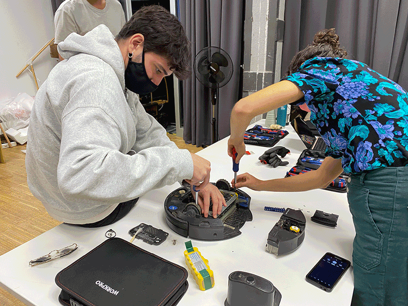

🗓 Week 6-7 / 9-19 November 2021
Tech Beyond the Myth
Forensics of the Obsolescence
Exploring the question of what is behind these "black boxes" of technological gadgets we use in our daily lives, we gathered to disect and find out for ourselves. As a class we had the roomba vaccum, large television monitor, Mac laptop and computer, and an electric heater.
Our group disassembled a first generation iRobot Roomba self-cleaning vaccum machine. Having owned a self-cleaning vaccum similar to this one, it was interesting to see each of the components that produced the functions.
It was fascinating to see how many different little parts (mechanic, casings, electronics, screws, plastics) the vaccum was made of.
There were four motors, two circuit boards, many infrared sensors, and many touch sensors. Wtih the discovery of every piece, we took time to discuss its use and look up the parts.
We concluded that some of these individual components were fairly simple in their function and mechanical composition, but also very complex engineering and producing each component.
Obsolescence Forensic Report : iRobot Roomba

| Identity of the reporting agency |
MDEF |
| Case identifier |
Forensics of the Obsolescence |
| Identity of the submitter |
Someone at the Fab Lab |
| Date of receipt |
09/11/2021 |
| Date of report |
09/11/2021 |
| Identity and signature of the examiner |
Joaquin, Roberto, Dídac, Angel, Audrey |
Examination
Serial number: 4256967 1-2
Brand: iRobot
Model: Roomba 500 Series
Colour: Black
Made in: China
Rated: 14.4V Ni-MH 3500mAh (battery pack)
Input: 22V - 1.25A

Forensic Questions
What does it do?
The iRobot Roomba 500 series is an automatic robotic vacuum cleaner. It cleans the dust from a floor plan without the need for manual human control utilising spinning brushes and a vacuum.
How does it work?
The Roomba uses a side mounted flailing brush to push the dirt underneath the machine where two counter rotating brushes catch the dirt and push it into a vacuum which is then stored in a dust bin.
The Roomba moves around a room through two cleaning modes: following the patterns of walls and bouncing off of objects and cleaning in straight lines.
How is it built?
On top of the Roomba there are infrared sensors which bounce light off of objects in front of it to detect them. It also has a touch sensor in its bumper so that it stops and bounces when it hits things. It also has infrared sensors underneath it to detect cliffs or stairs.
Inside it uses a “piezo” sensor to detect particularly dirty patches. When the bits of dirt hit the sensor, they generate an electric impulse that let the Roomba know that a spot is particularly dirty and so it’ll retrace that spot and go slower to clean that space more thoroughly.
Why it failed, or it wasn’t used anymore?
Older versions of Roombas moved in a very dumb manner, in straight lines and often over already clean areas which made them very inefficient and took a long time to clean rooms. They also have small dust bins which make cleaning the bin and the brushes something you’d have to do more often than a normal vacuum cleaner.
Its rechargable battery has a total life-span of 5-7 years and after the first year or two its battery will be half as good, which won’t be enough to clean an entire room. If the brushes aren’t cleaned often it’ll pull more energy to suck up the dirt and will become less gradually less efficient with time.
Steps taken
- Disassembled by hand what could be taken apart by hand (the dust collector)
- Disassembled with the screws.
- Separated individual components and classified by their function.
- Navigation (wheels, infrared sensor, touch sensor)
- Filtration (dust collector, brushes, vacuum, gears)
- Power supply (charger pins, battery)
- Output display (screens)
- Computer (PCBs, 2 microcontrollers, buttons)
- Connections (wires)
- Researched their function
- Tested the motors with the power supply
- Laid them out individually and documented
Dust collector components.


Test of the fan motor with a lab power supply

“Master” Controller


Datasheet STM8s207 : https://www.st.com/resource/en/datasheet/stm8s207mb.pdf
Datasheet STR7359PZ (we couln’t find the datasheet of that exact component so it is a close one):https://pdf1.alldatasheet.com/datasheet-pdf/view/115167/STMICROELECTRONICS/STR736FV1T7.html
Microscope view of the microprocessor STM8s207

Looking for definitions in Internet
Dc motor “RC500” 6V

Why its uses a PIezoelectric in the dustbin??

https://www.explainthatstuff.com/how-roomba-works.html
Classifying the parts


Top Connector Pinout

USB to Roomba Connector
Results
How many motors did we find inside?
Does it contain a computer or microcontroller?
- 3 big ones and 4 small ones
Conclusions
Reverse engineering the iRobot Roomba 500, we could identify several deficiencies with the design and the functionality of the automatic robotic vacuum cleaner.
As an initial observation, some components were not easily disassembled with a screwdriver and had to be torn manually. This prevents the possibility of repair past its original estimated product lifetime and relies on dependency to a central manufacturer.
Additionally, we noticed that despite its internal filtration components, dirt and debris managed to make their way inside the controller section where debris shouldn’t go. This could contribute to a rapid deterioration of the product.
The mechanics of the iRobot Roomba 500 lent themselves to a misuse of energy by following a random path of cleaning which would expend the rechargable battery at a faster rate than it would if it followed a more logical cleaning path. This shortened the lifespan of the rechargable battery considerably.
Opinions
What do you learn?
- We learnt functions of components we didn’t know such as piezoelectricity
- Testing motors with a power supply
- The logic behind the decisions that were made in deciding which sensors to use
What surprised you?
- The number of sensors used to navigate (IR)
- The number of parts and pieces that were inside the iRobot.
- The dirt inside (hair, dust)
- The single random triangle screw!
- The non-accessibility of many parts of the iRobot
- Impossible to put back together after dissassembling!
Questions
- How could it be made differently to be easily repaired?
Update 10/11/21:
Roomba 2021
price: 1.500 euros.
-New Shape
-Wifi connection
-Visual simultaneous localization and mapping(SLAM)
Visual SLAM systems are also used in a wide variety of field robots. For example, rovers and landers for exploring Mars use visual SLAM systems to navigate autonomously. Field robots in agriculture, as well as drones, can use the same technology to independently travel around crop fields. Autonomous vehicles could potentially use visual SLAM systems for mapping and understanding the world around them.
One major potential opportunity for visual SLAM systems is to replace GPS tracking and navigation in certain applications. GPS systems aren’t useful indoors, or in big cities where the view of the sky is obstructed, and they’re only accurate within a few meters. Visual SLAM systems solve each of these problems as they’re not dependent on satellite information and they’re taking accurate measurements of the physical world around them.


HackMD Report

Measuring the World
As a group, we came up with the objective to learn about where our food originates from. Which led us to the hypothesis: Does the food in Iaac's vending machine come from local sources?
We investigated this topic through the webscraping method and gathering data.
From objectives to the hypothesis
Brainstorming


Project Goals
Objective:
We want to eat more locally produced food.
Question:
Where does our food come from?
Hypothesis:
the majority of food in the vending machine is not locally produced.
Tips
Explain one or more mistakes you’ve done during that phase?
What would you change if will do it again?
Our expectations were too high: we assumed that a lot of the data regarding food production would be available to the public.
Maybe we could re-orient our objective from location to nutrition.
From hypothesis to data
Post multiple images about the tool. What tool did you use? Would you choose a different tool now?
Web scraping: Manually and Automated through python

Finding websites that have databases about food production, import and export
Oec

ITC Trade Map

How can others replicate your data capturing process again?
They can find the base code of our web scraping tool on the FabLab hackmd (Here.)
All database sources are written below.
Data capturing strategy
How do you combine the tool provided with your creativity to prove your hypothesis? How long did you capture data?
We decided which categories to research, basing ourselves on the ingredients within IAAC’s specific vending machine. We started small, then built up until we reached a global scale of interconnected supply chains.
Materials needed
List all the materials needed, including those given to you, those you source or even things you built yourself.
Techniques used:
- Manual “web scraping”
- Automated web scraping
- Scanning products through Open Food Facts app
- Researching through food brand website
Resources used:
Detail setup instructions
Explain the setup process. You can simply publish multiple images about your setup.
Map of our process:

Data collected
Describe the raw data you collected by posting a sample i.e. a picture, a screen capture, etc.

Excel sheets generated from open food facts:

Map from open food facts

Excel sheet from ITC trade map
via GIPHY
Interactive map from OEC

Interactive map from CIAT

Thanks to all of these sources, we managed to cross reference the information which we obtained. We noticed many differences from one resource to the other.
Data capture
Data summary
| Data Summary |
|
| Project Title |
Food Origins |
| Capture Start |
11-11-2021 |
| Capture End |
12-11-2021 |
| Original Data Format |
Website html |
| Submitted format |
CSV file |
| Total Data Points |
approximately 5000 |
| Number of datasets |
5 seperate files |
| Data Repository |
https://github.com/fablabbcn/mdef-a-world-in-data |
Data insights
Post at least two images of a chart, a screen-shoot of your data, that you used to prove if your hypothesis is false.
We were surprised to see that the Natwins cookies claimed their product was “local”. However, they do not define what exactly local means, and later state that their ingredients come from the “Mediterranean”.
The mediterranean area includes 21 countries, which means that the food origins are almost untraceable (Albania, Algeria, Bosnia and Herzegovina, Croatia, Cyprus, Egypt, France, Greece, Israel, Italy, Lebanon, Libya, Malta, Monaco, Montenegro, Morocco, Slovenia, Spain, Syria, Tunisia, and Turkey)


We decided to buy a sandwich from the vending machine and trace the possible origins of the main ingredients, using OEC’s data concerning Spain’s imported products.
The unit of measurement was the value of product in USD$ and not in tonnes.

The primary ingredients of the sandwich were:
- wheat
- pig meat
- cheese
- nuts
- eggs
- yeast
- olive oil
And these were the primary imports in Spain:
via GIPHY
Of course, this only displays the probability of where each component originated if they were imported.
Web scraping v/s Open APIs
Sometimes it might be beneficial to see if there is an open API to access a database instead of going for web scraping the frontend data right away. In the case of Openfoodfacts.com, they offered an open and very well-documented API, offering various export formats. This allowed us to easily download and analyze the complete dataset for the product category of ‘sandwiches’. This was made possible thanks to all the data being covered by the Open Data Commons License.
Conclusions
It is very difficult to retrieve information about where food comes and goes
There is a lack of transparency regarding the movement of goods
There is no detailed information available to the public about food sources
Recognising that Web Scraping is an option, but not always the best or more efficient one.
Tips
Explain one or more mistakes you’ve done during that phase? What would you change if will do it again? What if you will have more time? (max 560 char)
Defining a more specific target in our hypothesis, would have allowed us to access more relevant information.
Possibly using a different context (restaurant, grocery store) would have yielded more interesting results.
Find the full group presentation here
Activity conducted by Angel Cho, Chris Ernst, Julia Steketee, Tattiana Butts, Paula Del Rio and Vikrant Mishra.
HackMD Journal
Measuring the World
As a group, we came up with the objective to learn about where our food originates from. Which led us to the hypothesis: Does the food in Iaac's vending machine come from local sources?
We investigated this topic through the webscraping method and gathering data.
From objectives to the hypothesis
Brainstorming
Project Goals
Objective:
We want to eat more locally produced food.
Question:
Where does our food come from?
Hypothesis:
the majority of food in the vending machine is not locally produced.
Tips
Explain one or more mistakes you’ve done during that phase?
What would you change if will do it again?
Our expectations were too high: we assumed that a lot of the data regarding food production would be available to the public.
Maybe we could re-orient our objective from location to nutrition.
From hypothesis to data
Post multiple images about the tool. What tool did you use? Would you choose a different tool now?
Web scraping: Manually and Automated through python
Finding websites that have databases about food production, import and export
Oec
ITC Trade Map
How can others replicate your data capturing process again?
They can find the base code of our web scraping tool on the FabLab hackmd (Here.)
All database sources are written below.
Data capturing strategy
How do you combine the tool provided with your creativity to prove your hypothesis? How long did you capture data?
We decided which categories to research, basing ourselves on the ingredients within IAAC’s specific vending machine. We started small, then built up until we reached a global scale of interconnected supply chains.
Materials needed
List all the materials needed, including those given to you, those you source or even things you built yourself.
Techniques used:
- Manual “web scraping”
- Automated web scraping
- Scanning products through Open Food Facts app
- Researching through food brand website
Resources used:
Detail setup instructions
Explain the setup process. You can simply publish multiple images about your setup.
Map of our process:
Data collected
Describe the raw data you collected by posting a sample i.e. a picture, a screen capture, etc.
Excel sheets generated from open food facts:
Map from open food facts
Excel sheet from ITC trade map
via GIPHY
Interactive map from OEC
Interactive map from CIAT
Thanks to all of these sources, we managed to cross reference the information which we obtained. We noticed many differences from one resource to the other.
Data capture
Data summary
| Data Summary |
|
| Project Title |
Food Origins |
| Capture Start |
11-11-2021 |
| Capture End |
12-11-2021 |
| Original Data Format |
Website html |
| Submitted format |
CSV file |
| Total Data Points |
approximately 5000 |
| Number of datasets |
5 seperate files |
| Data Repository |
https://github.com/fablabbcn/mdef-a-world-in-data |
Data insights
Post at least two images of a chart, a screen-shoot of your data, that you used to prove if your hypothesis is false.
We were surprised to see that the Natwins cookies claimed their product was “local”. However, they do not define what exactly local means, and later state that their ingredients come from the “Mediterranean”.
The mediterranean area includes 21 countries, which means that the food origins are almost untraceable (Albania, Algeria, Bosnia and Herzegovina, Croatia, Cyprus, Egypt, France, Greece, Israel, Italy, Lebanon, Libya, Malta, Monaco, Montenegro, Morocco, Slovenia, Spain, Syria, Tunisia, and Turkey)
We decided to buy a sandwich from the vending machine and trace the possible origins of the main ingredients, using OEC’s data concerning Spain’s imported products.
The unit of measurement was the value of product in USD$ and not in tonnes.
The primary ingredients of the sandwich were:
- wheat
- pig meat
- cheese
- nuts
- eggs
- yeast
- olive oil
And these were the primary imports in Spain:
via GIPHY
Of course, this only displays the probability of where each component originated if they were imported.
Web scraping v/s Open APIs
Sometimes it might be beneficial to see if there is an open API to access a database instead of going for web scraping the frontend data right away. In the case of Openfoodfacts.com, they offered an open and very well-documented API, offering various export formats. This allowed us to easily download and analyze the complete dataset for the product category of ‘sandwiches’. This was made possible thanks to all the data being covered by the Open Data Commons License.
Conclusions
It is very difficult to retrieve information about where food comes and goes
There is a lack of transparency regarding the movement of goods
There is no detailed information available to the public about food sources
Recognising that Web Scraping is an option, but not always the best or more efficient one.
Tips
Explain one or more mistakes you’ve done during that phase? What would you change if will do it again? What if you will have more time? (max 560 char)
Defining a more specific target in our hypothesis, would have allowed us to access more relevant information.
Possibly using a different context (restaurant, grocery store) would have yielded more interesting results.
Find the full group presentation here
Activity conducted by Angel Cho, Chris Ernst, Julia Steketee, Tattiana Butts, Paula Del Rio and Vikrant Mishra.
In this last group exercise, our prompt was to design a machine without practical function. Our idea was a machine that works in a loop cycle and represents the cycle of waste produced by humans. We pitched our idea to the other groups and they negotiated which components we needed from the "bazaar" (the remnants of parts from the Forensic Obsolescence exercise),
and were given two wheels with motors from the roombam, CD motor from a macbook computer, and a button. With these objects, we made a quick sketch of the possibilities of forms and mechanics that will produce a cycle in an interesting and representative way, and got to work.
Our machine consisted of two main components: the physical structure where the ball falls through the incline and the robotic arm that picks up the ball and places it on the top of the incline. I helped out on both the electronics and building of the structure. It was interesting to create our flow charts and understand the logic behind the programming of the machine.
We first tested the mechanics and programming out with buttons, but managed to automate it for the final filming.

Obsolescence Forensic Report : iRobot Roomba
Examination
Serial number: 4256967 1-2
Brand: iRobot
Model: Roomba 500 Series
Colour: Black
Made in: China
Rated: 14.4V Ni-MH 3500mAh (battery pack)
Input: 22V - 1.25A
Forensic Questions
What does it do?
The iRobot Roomba 500 series is an automatic robotic vacuum cleaner. It cleans the dust from a floor plan without the need for manual human control utilising spinning brushes and a vacuum.
How does it work?
The Roomba uses a side mounted flailing brush to push the dirt underneath the machine where two counter rotating brushes catch the dirt and push it into a vacuum which is then stored in a dust bin.
The Roomba moves around a room through two cleaning modes: following the patterns of walls and bouncing off of objects and cleaning in straight lines.
How is it built?
On top of the Roomba there are infrared sensors which bounce light off of objects in front of it to detect them. It also has a touch sensor in its bumper so that it stops and bounces when it hits things. It also has infrared sensors underneath it to detect cliffs or stairs.
Inside it uses a “piezo” sensor to detect particularly dirty patches. When the bits of dirt hit the sensor, they generate an electric impulse that let the Roomba know that a spot is particularly dirty and so it’ll retrace that spot and go slower to clean that space more thoroughly.
Why it failed, or it wasn’t used anymore?
Older versions of Roombas moved in a very dumb manner, in straight lines and often over already clean areas which made them very inefficient and took a long time to clean rooms. They also have small dust bins which make cleaning the bin and the brushes something you’d have to do more often than a normal vacuum cleaner.
Its rechargable battery has a total life-span of 5-7 years and after the first year or two its battery will be half as good, which won’t be enough to clean an entire room. If the brushes aren’t cleaned often it’ll pull more energy to suck up the dirt and will become less gradually less efficient with time.
Steps taken
Dust collector components.

Test of the fan motor with a lab power supply
“Master” Controller

Datasheet STM8s207 : https://www.st.com/resource/en/datasheet/stm8s207mb.pdf
Datasheet STR7359PZ (we couln’t find the datasheet of that exact component so it is a close one):https://pdf1.alldatasheet.com/datasheet-pdf/view/115167/STMICROELECTRONICS/STR736FV1T7.html
Microscope view of the microprocessor STM8s207

Looking for definitions in Internet

Dc motor “RC500” 6V
Why its uses a PIezoelectric in the dustbin??

https://www.explainthatstuff.com/how-roomba-works.html
Classifying the parts
Top Connector Pinout
USB to Roomba Connector
Results
How many motors did we find inside?
Does it contain a computer or microcontroller?
Conclusions
Reverse engineering the iRobot Roomba 500, we could identify several deficiencies with the design and the functionality of the automatic robotic vacuum cleaner.
As an initial observation, some components were not easily disassembled with a screwdriver and had to be torn manually. This prevents the possibility of repair past its original estimated product lifetime and relies on dependency to a central manufacturer.
Additionally, we noticed that despite its internal filtration components, dirt and debris managed to make their way inside the controller section where debris shouldn’t go. This could contribute to a rapid deterioration of the product.
The mechanics of the iRobot Roomba 500 lent themselves to a misuse of energy by following a random path of cleaning which would expend the rechargable battery at a faster rate than it would if it followed a more logical cleaning path. This shortened the lifespan of the rechargable battery considerably.
Opinions
What do you learn?
What surprised you?
Questions
Update 10/11/21:
Roomba 2021
price: 1.500 euros.
-New Shape
-Wifi connection
-Visual simultaneous localization and mapping(SLAM)
Visual SLAM systems are also used in a wide variety of field robots. For example, rovers and landers for exploring Mars use visual SLAM systems to navigate autonomously. Field robots in agriculture, as well as drones, can use the same technology to independently travel around crop fields. Autonomous vehicles could potentially use visual SLAM systems for mapping and understanding the world around them.
One major potential opportunity for visual SLAM systems is to replace GPS tracking and navigation in certain applications. GPS systems aren’t useful indoors, or in big cities where the view of the sky is obstructed, and they’re only accurate within a few meters. Visual SLAM systems solve each of these problems as they’re not dependent on satellite information and they’re taking accurate measurements of the physical world around them.